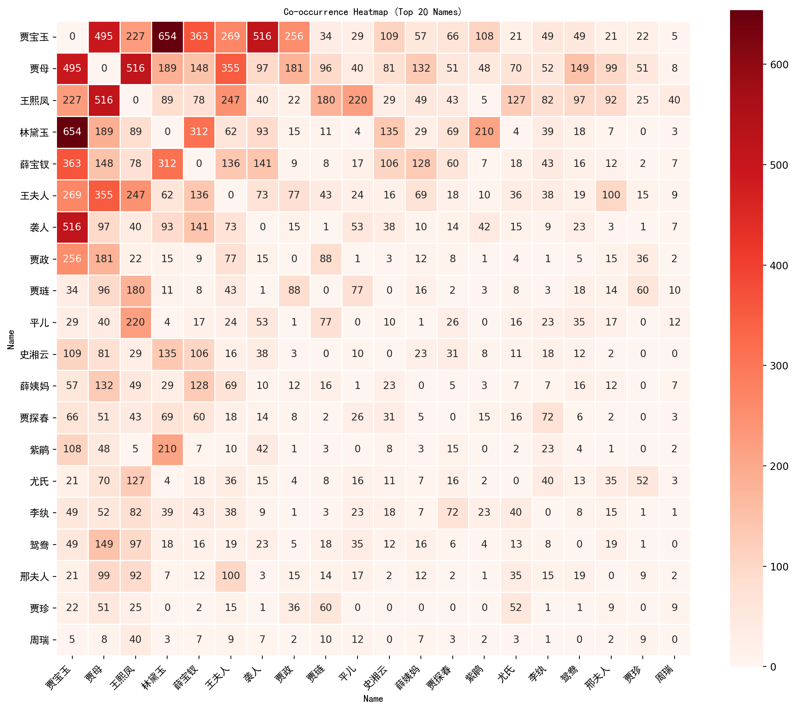

Code
# The echo: false option disables the printing of code (only output is displayed).
with open("data/fulltext_simplified.txt", "r", encoding="utf-8") as file:
main_text = file.read()Pascal Martinolli ![]()
dataviz; data visualization; Dream of the Red Chamber; 红楼梦
It’s a data visualization of the three main protagonists of 红楼梦 (Dream of the Red Chamber), a classic of Chinese literature. It represents their mentions along the 120 chapters of the novel.
This page is the result of some experimentations I made to try Python in a Quarto environment with jupyter.
Importing fulltext_simplified.txt, a text file retrieved from lilesIII. It is written with simplified chinese characters.
# The echo: false option disables the printing of code (only output is displayed).
with open("data/fulltext_simplified.txt", "r", encoding="utf-8") as file:
main_text = file.read()Putting the content into a panda dataframe and shampooing the data :
| Chapter_num | Chapter | RawContent |
|---|---|---|
# Count how many times the three main protagonists are counted in RawContent
# Synonyms are enriched thanks to Wikidata (in labels).
# List of Jia Baoyu's synonyms https://www.wikidata.org/wiki/Q8428650
jia_baoyu_synonyms = [
'贾宝玉', '賈寶玉', '寶玉', '寶二爺', '怡紅公子',
'絳洞花王', '富貴閒人', '宝玉', '宝二爷',
'絳洞花主', '绛洞花主', '怡红公子', '绛洞花王'
]
# Join them into a regex pattern
jia_baoyu_pattern = '|'.join(jia_baoyu_synonyms)
# Use in your count
df_cn['count_JiaBaoyu'] = df_cn['RawContent'].str.count(jia_baoyu_pattern)
# List of Lin Daiyu's synonyms
lin_daiyu_synonyms = [
'林黛玉', '黛玉', '瀟湘妃子', '顰兒', '颦儿',
'林姑娘', '林妹妹', '潇湘妃子', "玉儿", "颦颦",
]
# Join them into a regex pattern
lin_daiyu_pattern = '|'.join(lin_daiyu_synonyms)
# Use in your count
df_cn['count_LinDaiyu'] = df_cn['RawContent'].str.count(lin_daiyu_pattern)
# List of Xue Baochai's synonyms
xue_baochai_synonyms = [
'薛寶釵', '薛宝钗', '寶釵', '宝钗',
'蘅蕪君', '蘅芜君', '寶姑娘', '宝姑娘',
'寶丫頭', '宝丫头', '寶姐姐', '宝姐姐'
]
# Join them into a regex pattern
xue_baochai_pattern = '|'.join(xue_baochai_synonyms)
# Use in your count
df_cn['count_XueBaochai'] = df_cn['RawContent'].str.count(xue_baochai_pattern)Plotting a heatmap for all the chapters with a different color intensity depending on how many times one of the three main protagonists are mentioned.
#Note that we included the cell option fold: true to hide the code by default (click the Code button to show it).
# pip install scikit-learn jieba seaborn matplotlib
# Draw a heat map for each entry and the values of the columns
import seaborn as sns
import matplotlib.pyplot as plt
import numpy as np
# Set Chapter_num as index for labeling rows in the heatmap
heatmap_data = df_cn.set_index('Chapter_num')[['count_JiaBaoyu', 'count_LinDaiyu', 'count_XueBaochai']]
# Create the heatmap
# Plot the heatmap without labels or annotations
plt.figure(figsize=(10, 6))
sns.heatmap(
heatmap_data,
annot=False, # No numbers inside cells
cmap='RdPu', # palette of colors
linewidths=0.5,
cbar=True,
xticklabels=True, # column names
yticklabels=False # No row labels
)
# Set y-ticks at intervals of 25
num_rows = heatmap_data.shape[0]
ticks = np.arange(0, num_rows, 25)
plt.yticks(ticks + 0.5, ticks + 1) # +0.5 centers ticks in cells, +1 shifts to 1-based indexing
plt.title('«Dream of the Red Chamber» Three Main Protagonists \n(Number of Mentions per Chapter)')
plt.ylabel('Chapter Number')
plt.xlabel('') # Remove the x-axis label
plt.tight_layout()
plt.savefig('images/characters_count_hlm.png', dpi=300, bbox_inches='tight')
plt.show()
# Set up data
chapter_nums = df_cn['Chapter_num']
counts_baoyu = df_cn['count_JiaBaoyu']
counts_daiyu = df_cn['count_LinDaiyu']
counts_baochai = df_cn['count_XueBaochai']
# Set figure size
plt.figure(figsize=(12, 6))
# Plot stacked bars
plt.bar(chapter_nums, counts_baoyu, label='Jia Baoyu', color='mediumvioletred')
plt.bar(chapter_nums, counts_daiyu, bottom=counts_baoyu, label='Lin Daiyu', color='orchid')
plt.bar(
chapter_nums,
counts_baochai,
bottom=counts_baoyu + counts_daiyu,
label='Xue Baochai',
color='plum'
)
# Labels and legend
plt.title('«Dream of the Red Chamber» Three Main Protagonists\n(Number of Mentions per Chapter)')
plt.xlabel('Chapter Number')
plt.ylabel('Number of Mentions')
plt.legend()
plt.tight_layout()
# Save and show
plt.savefig('images/characters_count_stackedbars.png', dpi=300, bbox_inches='tight')
plt.show()
This one is not stacked, so it’s more readable.
# Set up data
chapter_nums = df_cn['Chapter_num']
counts_baoyu = df_cn['count_JiaBaoyu']
counts_daiyu = df_cn['count_LinDaiyu']
counts_baochai = df_cn['count_XueBaochai']
# Set figure and axes
fig, axs = plt.subplots(3, 1, figsize=(12, 10), sharex=True)
# Jia Baoyu
axs[0].bar(chapter_nums, counts_baoyu, color='mediumvioletred')
axs[0].set_title('Jia Baoyu – Number of Mentions per Chapter')
axs[0].set_ylabel('Mentions')
# Lin Daiyu
axs[1].bar(chapter_nums, counts_daiyu, color='orchid')
axs[1].set_title('Lin Daiyu – Number of Mentions per Chapter')
axs[1].set_ylabel('Mentions')
# Xue Baochai
axs[2].bar(chapter_nums, counts_baochai, color='plum')
axs[2].set_title('Xue Baochai – Number of Mentions per Chapter')
axs[2].set_ylabel('Mentions')
axs[2].set_xlabel('Chapter Number')
# Tweak layout
plt.suptitle('«Dream of the Red Chamber» – Character Mentions per Chapter', fontsize=16, y=1.02)
plt.tight_layout()
plt.savefig('images/characters_count_separate_bars.png', dpi=300, bbox_inches='tight')
plt.show()
Threshold (maximum distance between names mentioned) = 20 words.
# Count how many times there is a jia_baoyu_synonyms AND a lin_daiyu_synonyms within 20/threshold characters.
threshold = 20
# Compile regex patterns (non-capturing groups for clarity)
jia_baoyu_pattern = r'(?:' + '|'.join(jia_baoyu_synonyms) + r')'
lin_daiyu_pattern = r'(?:' + '|'.join(lin_daiyu_synonyms) + r')'
# Pattern: 贾宝玉 followed by ≤20/threshold chars then 林黛玉, OR 林黛玉 followed by ≤20/threshold chars then 贾宝玉
jia_lin_pattern = rf'{jia_baoyu_pattern}.{{0,{threshold}}}{lin_daiyu_pattern}|{lin_daiyu_pattern}.{{0,{threshold}}}{jia_baoyu_pattern}'
# Function to count matches in a string
def count_jia_lin_pairs(text):
return len(re.findall(jia_lin_pattern, text))
# Apply to the DataFrame
df_cn['JiaBaoyu_LinDaiyu'] = df_cn['RawContent'].apply(count_jia_lin_pairs)
# count pairs of jia et xue
xue_baochai_pattern = r'(?:' + '|'.join(xue_baochai_synonyms) + r')'
# Pattern: 贾宝玉 followed by ≤20/threshold chars then 林黛玉, OR 林黛玉 followed by ≤20/threshold chars then 贾宝玉
jia_xue_pattern = rf'{jia_baoyu_pattern}.{{0,{threshold}}}{xue_baochai_pattern}|{xue_baochai_pattern}.{{0,{threshold}}}{jia_baoyu_pattern}'
# Function to count matches in a string
def count_jia_xue_pairs(text):
return len(re.findall(jia_xue_pattern, text))
# Apply to the DataFrame
df_cn['JiaBaoyu_XueBaochai'] = df_cn['RawContent'].apply(count_jia_xue_pairs)
# count pairs of lin et xue
lin_xue_pattern = rf'{lin_daiyu_pattern}.{{0,{threshold}}}{xue_baochai_pattern}|{xue_baochai_pattern}.{{0,{threshold}}}{lin_daiyu_pattern}'
# Function to count matches in a string
def count_lin_xue_pairs(text):
return len(re.findall(lin_xue_pattern, text))
# Apply to the DataFrame
df_cn['LinDaiyu_XueBaochai'] = df_cn['RawContent'].apply(count_lin_xue_pairs)# Set Chapter_num as index for labeling rows in the heatmap
heatmap_data = df_cn.set_index('Chapter_num')[['JiaBaoyu_LinDaiyu', 'JiaBaoyu_XueBaochai','LinDaiyu_XueBaochai']]
# # Create the heatmap
# Plot the heatmap without labels or annotations
plt.figure(figsize=(10, 6))
sns.heatmap(
heatmap_data,
annot=False, # No numbers inside cells
cmap='RdPu',
linewidths=0.5,
cbar=True,
xticklabels=True, # column names
yticklabels=False # No row labels
)
# Set y-ticks at intervals of 25
num_rows = heatmap_data.shape[0]
ticks = np.arange(0, num_rows, 25)
plt.yticks(ticks + 0.5, ticks + 1) # +0.5 centers ticks in cells, +1 shifts to 1-based indexing
plt.title('«Dream of the Red Chamber» Pairs of Protagonists \n Mentioned Together (per Chapter)')
plt.ylabel('Chapter Number')
plt.xlabel('') # Remove the x-axis label
plt.tight_layout()
plt.savefig('images/pairs_characters_hlm.png', dpi=300, bbox_inches='tight')
plt.show()
From now on, I will not use manual synonyms like before because it’s too heavy for managing a high number of characters.
From lileslll, I found the file userdict.json : contains 165 characters of the novel and theirs nicknames… I rename it userdict_simplified.json.
I remove from the corpus all the words that are not in userdict_simplified.json. Like that, we can built a similarity matrix based on the characters in each chapters.
Put the userdic_simplified into a df with two columns : Name and NamePattern.
{
"贾宝玉": [
"贾宝玉",
"宝玉",
"宝二爷",
"怡红公子",
"绛洞花主",
"宝兄弟"
],
"林黛玉": [
"林黛玉", The first key will be Name and the second key will be NamePattern.
| Name | NamePattern | Count |
|---|---|---|
| 贾宝玉 | 贾宝玉 | |
| 贾宝玉 | 宝玉 | |
| 贾宝玉 | 宝二爷 |

Expanding userdict_simplified.json to add all the positions of each matches.
| Name | NamePattern | Chapter_num | Position in RawContent |
|---|---|---|---|
| 贾宝玉 | 贾宝玉 | 1 | 3650 |
| 贾宝玉 | 宝玉 | 6 | 5896 |
| … | … |
Checked ✅
Now i want a matrix of Name that count characters presents in the same chapter.
The following code took 12 hours (!) to complete on my laptop. ⬇️
" UNCOMMENT TO REACTIVATE \n\nimport pandas as pd\nimport numpy as np\n\n# Get unique NamePatterns\nname_patterns = df_matches['NamePattern'].unique()\n\n# Initialize the matrix with zeros\nmatrix = pd.DataFrame(0, index=name_patterns, columns=name_patterns)\n\n# Iterate through each pair of matches\nfor i, row_i in df_matches.iterrows():\n for j, row_j in df_matches.iterrows():\n if i >= j:\n continue # Avoid duplicate and self comparisons\n\n # Check if in same chapter\n if row_i['Chapter_num'] == row_j['Chapter_num']:\n # Check if within +/- 20 positions\n if abs(row_i['Position'] - row_j['Position']) <= 20:\n matrix.loc[row_i['NamePattern'], row_j['NamePattern']] += 1\n matrix.loc[row_j['NamePattern'], row_i['NamePattern']] += 1 # symmetric\n \n# Export for control\nmatrix.to_csv('temp/matrix_proximity.csv', index=True)\n\n"Reading the csv previously generated into matrix (to avoid recalculating)
Finalizing counting of proximity
Just keep the highest 20
Drawing a heatmap

Brown, J. Text Analysis and Data Visualization Assignment: Little Women. JBrown’s Blog (2010) https://jbrownsblog.wordpress.com/2010/11/29/text-analysis-and-data-visualization-exercise/
Heiss, A. PMAP 8921: Data Visualization (2020) https://datavizm20.classes.andrewheiss.com/example/13-example/, updated for 2025 https://datavizsp25.classes.andrewheiss.com/example/14-example.html
Wang, Z., Huang, D., Cui, J. et al. A review of Chinese sentiment analysis: subjects, methods, and trends. Artif Intell Rev 58, 75 (2025). https://doi.org/10.1007/s10462-024-10988-9